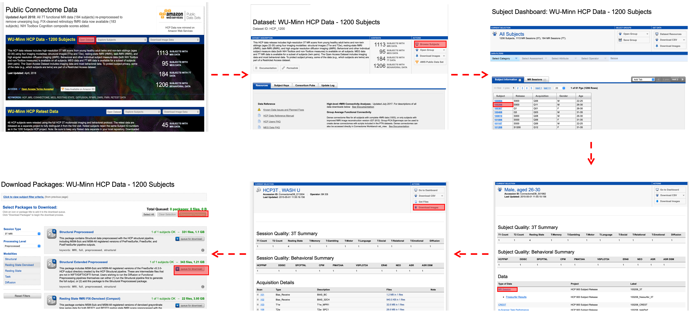
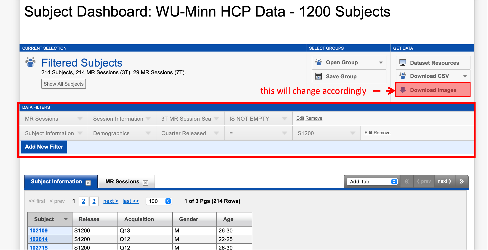
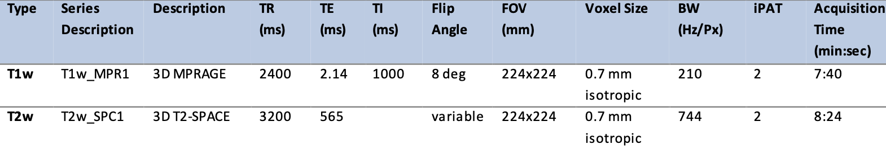
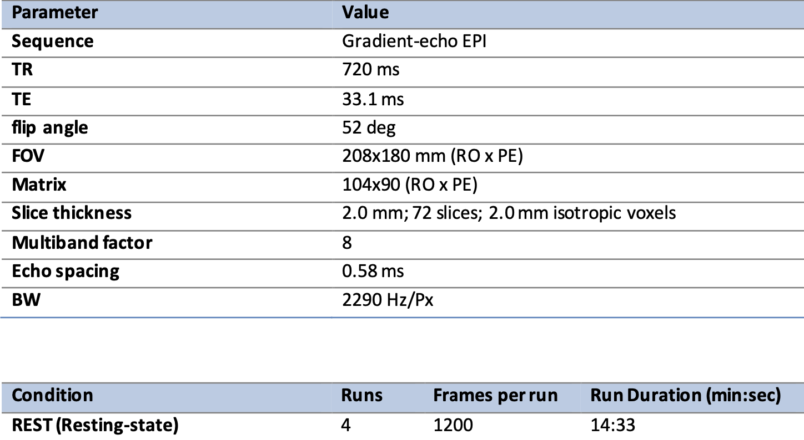

HCP dataset
Accessing HCP data
Go to connectome db for downloading the data. For details, see Reference Manual chapter 1.
For example, if you want to download the data for a specific subject, see the following steps:
|  |
For batch downloading, use “filters”:
|  |
File directory structure
See Reference Manual chapter 3 or Appendix III of the Reference Manual for more detailed information.
For unprocessed images, the folders for one subject should look like the following:
 |
For preprocessed data:
structural
T1w/ : T1w and T2w volume data (see FreeSurfer naming conventions)
T1w/Native/: FreeSurfer surfaces in their native mesh and original dimensions after rigid-body rotation to AC-PC alignment.
MNINonLinear/: data registered to MNI152 space
MNINonLinear/Native/: additional files used during surface-based registration.
MNINonLinear/xfms/: files encoding the transformation between acpc and MNINonLinear volumetric space.
MNINonLinear/fsaverage_LR32k/: files spatially downsampled to a 32k mesh (average vertex spacing of 2 mm)
fMRI
MNINonLinear/Results/ : volumetric and CIFTI grayordinates data, motion parameters, and physiological data
For rs-fMRI, there are 4 subdirectories named similar to rfMRI_REST1_RL
For t-fMRI, there are 7 pairs of tfMRI scans (14 folders), named similar to tfMRI_EMOTION_RL. There are additional 7 folders named similar to tfMRI_LANGUAGE that contain an .fsf file that can be used to run analysis across the two runs of each task.
Each of the directories contains an .fsf file and a “EVs” directory containing explanatory variables. These files can be used to run first-level analyses in the FSL program FEAT.
Estimates of motion parameters are saved into two different files: Movement_Regressors.txt and Movement_Regressors_dt.txt.
Diffusion
T1w/ : contains T1w_acpc_dc_restore_1.25.nii.gz (structural volume)
T1w/Diffusion/: contains bval, bvec, data.nii.gz(preprocessed diffusion time series), nodif_brain_mask.nii.gz(brain mask) and grad_dev.nii.gz (effects of gradient nonlinearities on the bvals and bvecs for each voxel).
Basic info for the HCP data
Imaging protocols for raw data
T1w/T2w: (Chapter 2 at Page 35)
|  |
rs-fMRI: (Chapter 2 at Page 35-36)
|  |
Preprocessing operations
fMRI: there are two pipelines (cf. Chapter 5 at Page 131-132):
fMRIVolume: spatial distortion removal, motion correction, bias field reduction, registration to the structural MNI template, and data masking with the brain mask based on FreeSurfer segmentation. (other sources of reference: [1], [2])
fMRISurface: aim to bring the time-series from the volume into the CIFTI grayordinates standard space. (you can ignore this)
Next steps…
There are some of the files that we may be specifically interested in using. The section briefly introduce how to locate and use them.
T1WI
File located at
<subject id>/MNINonLinear/T1w.nii.gz
rs-fMRI
File located at
<subject id>/MNINonLinear/Results/rfMRI_REST1_LR/rfMRI_REST1_LR.nii.gz
There are four such files (2 sessions, each session has both LR and RL). Just pick any one of them. The nii.gz file size should be around 1 GB.
This particular image is preprocessed using fMRIVolume only (see above). The resulting volumetric data contains values at \(91 \times 109 \times 91 = 902629\) 2-mm isotropic voxels (MNI152) at 1200 time points. To see this, simply download the MATLAB function load_nii and run
nii = load_nii('rfMRI_REST1_LR.nii');
X = nii.img;
size(X) % 91x109x91x1200 4-D single
Ultimately, we want to compute functional connectivity between each pair of ROIs. The first step is to compute the average time-series across all voxels within every single ROI. MATLAB scripting will be hard wrt atlas and registration. Instead, this can be done using:
FSL: can process one ROI only with fslmeants. Need to write script to automate the process for outputting all ROI time series.
And then Pearson correlation can be computed on these time-series to obtain the connectivity matrix. There are also softwares that directly output the final connectivity:
CONN: ROI-to-ROI analyses, see also this page
t-fMRI
We use language for example. File is located at
<subject id>/MNINonLinear/Results/tfMRI_LANGUAGE_LR/tfMRI_LANGUAGE_LR.nii.gz
Diffusion
File located at